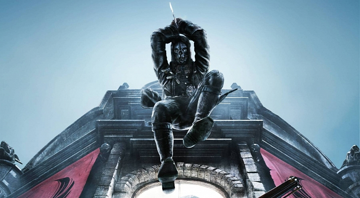

Dunwall City Trials
The pack contains ten distinct challenge maps that will test and track the player's combat, stealth and mobility skills. The goal is to achieve three stars on each level. To achieve three stars, 30,000 points must be accumulated (which is 10,000 points per star). The amount of points achieved depends on how well the challenge is completed. Such variables can include time taken, enemies altered, kill combos, etc.